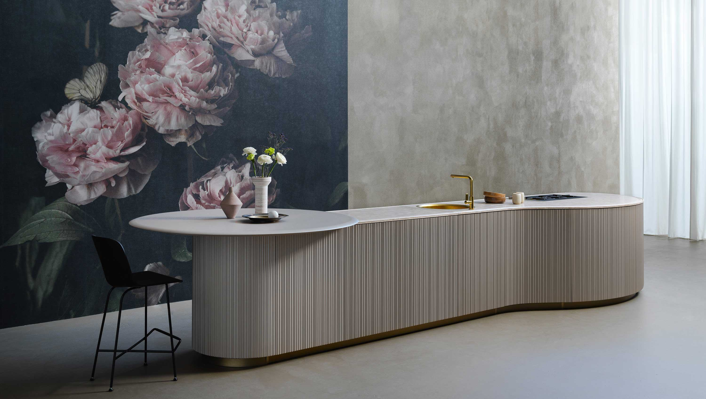
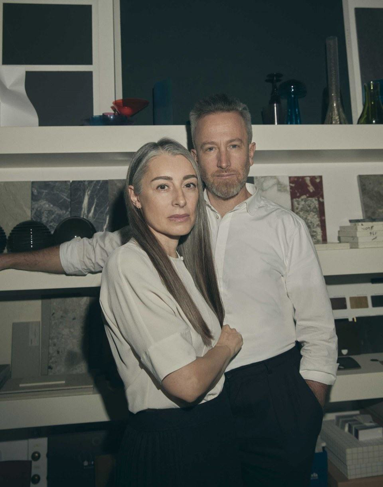
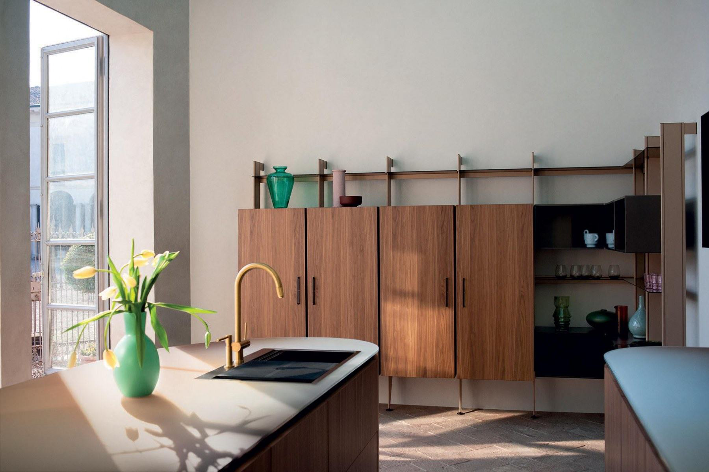
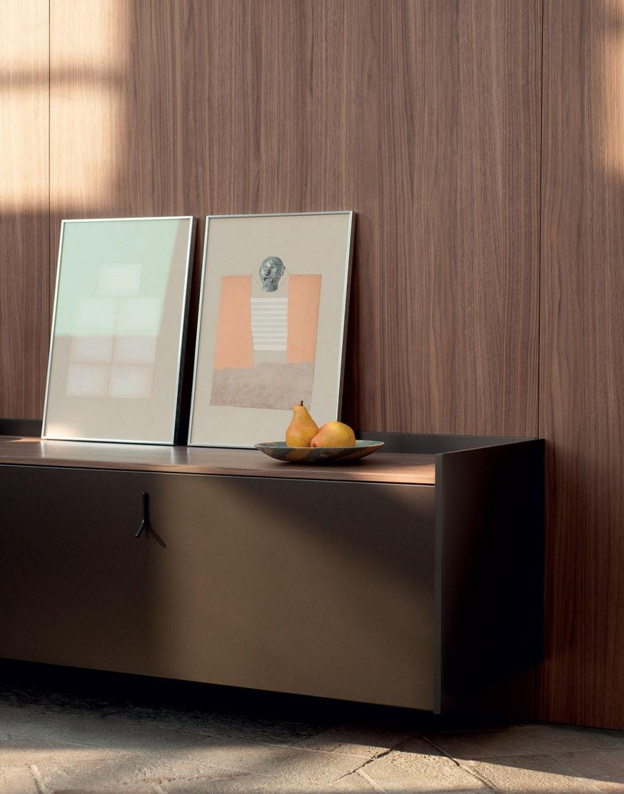
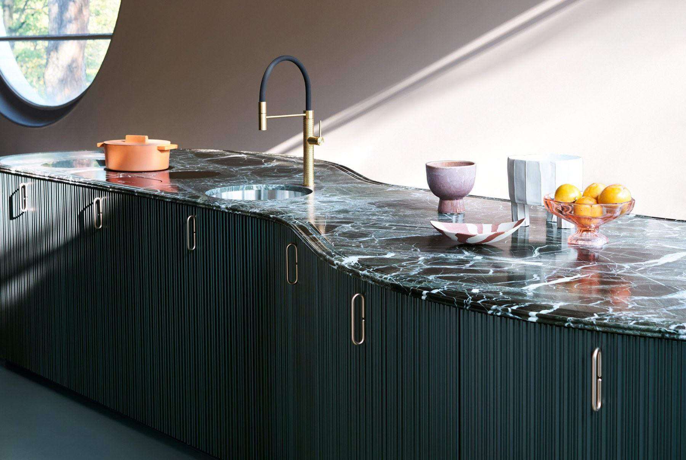
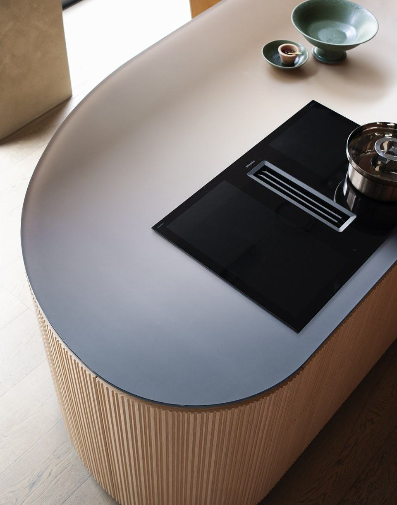
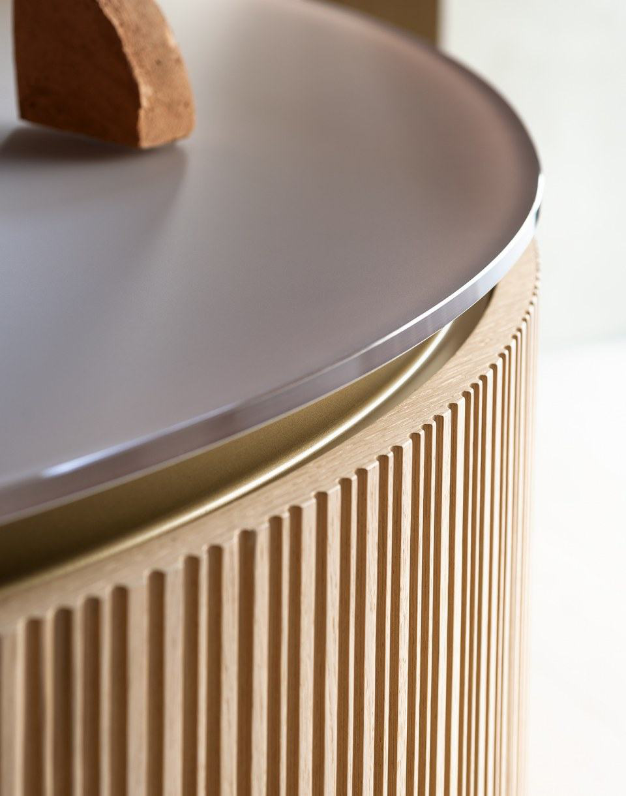
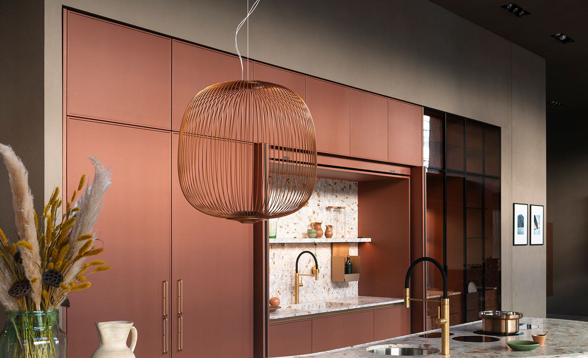

Tangram
Design by Garcia Cumini
Tangram состоит из пяти изогнутых элементов, которые можно комбинировать с прямыми элементами по желанию, создавая кухонные острова необычных форм, композиции у стены или даже решения, обвивающие углы.
Чтобы подчеркнуть плавность линий Tangram, дверцы шкафов по запросу могут быть украшены специальным декоративным элементом: трехмерным элементом под названием Groove, состоящим из последовательности вертикальных надрезов.
Неправильный контур, чередование полных и пустых пространств, а также игра света и тени скрывают проемы дверей, тем самым способствуя эффекту маскировки.


Студия дизайна Garcia Cumini объединяет итальянскую и испанскую культуры с их креативностью, любовью к красоте и желанием жить полной жизнью. Она была создана в 2012 году дизайнерами Виченте Гарсиа Хименесом и Чинцией Кумини - дополняющими друг друга личностями, которые в работе и в личной жизни развивают собственный подход к проектированию и концепции Slow Design. Целостное видение, когда время и энергия концентрируются на поиске идеального решения и предварительном анализе с двух точек зрения: образ жизни тех, кто будет пользоваться проектом, и технические инновации с производственными процессами. Результат - создание форм и организация пространства, которые долго сохраняют гармонию эстетики, функциональности и технологии.


Winding
Поиск своего пути в жизни - это суть любого человека.
Наиболее удачливыми оказываются не те, кто выбирает самый простой маршрут, а те, кто не боится поворотов и незнакомых направлений, в итоге достигая своих целей.



